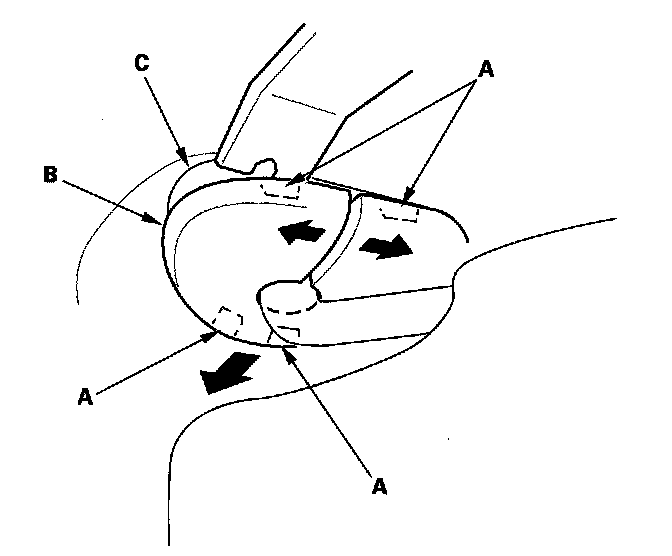

Sun Visor: Service and Repair
Sunvisor Removal/InstallationSpecial Tools Required
KTC trim tool set SOJATP2014 *
* Available through the American Honda Tool and Equipment Program
NOTE:
- Take care not to scratch the headliner.
- Be careful not to damage the dashboard and other interior trim.
- Use the appropriate tool from the KTC trim tool set to avoid damage when removing components.
- When using a flat-tip screwdriver, wrap it with protective tape to prevent damage.

1. Using a trim tool, release the tabs (A) of the sunvisor cap (B) from the bracket (C).
2. Remove the sunvisor (A).
1. Remove the screws.
2. Remove the sunvisor from the body and holder (B).
3. Disconnect the vanity mirror light connector (C).
3. Using a flat-tip screwdriver, push the hook (A), and turn the holder (B) 90 ° , then pull it out.
4. If the side curtain airbag has deployed, replace the sunvisor with a new one.
5. If the side curtain airbag has not deployed, to prevent the side curtain airbags from deploying improperly and possibly causing injury, inspect removed sunvisor and replace it if it has any cracks or damage:
- Any cracks in the sunvisor stay base (A)
- Any bends or cracks in the sunvisor stay shaft (B)
- Any cracks in the sunvisor base (C)
- Any cracks in the vanity mirror base (D)
6. Install the sunvisor in the reverse order of removal, and make sure the vanity mirror light connector is plugged in properly.